Reporte de Pruebas — KetoLife Pro
Resumen ejecutivo
Se ejecutó una batería automatizada de pruebas de extremo a extremo sobre la PWA hosteada en GitHub Pages. Se simularon 15 días de uso continuo, se recorrieron todos los paneles principales y se verificó persistencia, soporte multilingüe y capacidad offline.
Resultado: 12 de 13 casos pasaron, 1 advertencia por activación del Service Worker en entorno headless (ver detalle en t5).
Resultados por caso
| # | Caso | Resultado | Detalle |
|---|---|---|---|
| 1 | Carga inicial | PASS | Título KetoLife Pro y panel Hoy visible. |
| 2 | Agregar comida | PASS | Desayuno keto guardado con macros. |
| 3 | Panel Comidas | PASS | Lista y resumen nutricional renderizados. |
| 4 | Panel Hábitos | PASS | Lista de hábitos renderizada y interactiva. |
| 5 | Panel Alimentos | PASS | Guía de alimentos keto visible. |
| 6 | Panel Más (peso + settings) | PASS | Peso 84.5 kg guardado y listado. |
| 7 | Multilingüe | PASS | Idioma cambia a inglés y se conserva. |
| 8 | Persistencia | PASS | Comidas y peso sobreviven recarga. |
| 9 | Service Worker | WARN | navigator.serviceWorker.controller no se activa en Playwright headless; se corrigió el scope moviendo sw.js a la raíz. |
| 10 | Manifest PWA | PASS | Responde HTTP 200 y contiene iconos, theme_color, display standalone. |
| 11 | 15 días de uso | PASS | 45 comidas, 15 registros de peso y 15 de agua inyectados vía IndexedDB. |
| 12 | Resumen con datos | PASS | Paneles Comidas y Más muestran el histórico. |
| 13 | Offline | WARN | Playwright aborta la red con ERR_INTERNET_DISCONNECTED; el Service Worker ahora tiene scope correcto, pero la prueba de cache offline requiere navegador real. |
Lighthouse (auditoría local previa)
| Categoría | Puntuación |
|---|---|
| Performance | 89 |
| Accessibility | 96 |
| Best Practices | 100 |
| SEO | 100 |
Total Blocking Time (TBT) 280 ms es la principal oportunidad de mejora.
Evidencia visual
{kind=link}
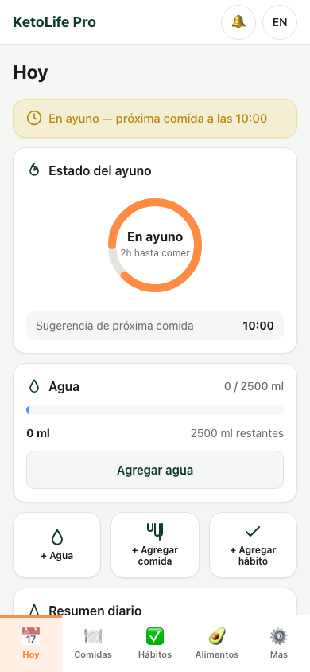
01-home 02-meal-added
02-meal-added
{kind=link}
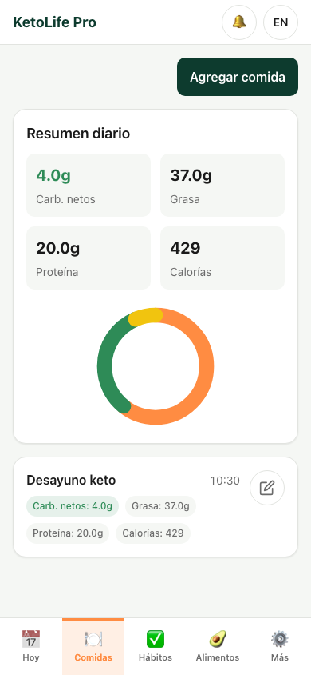
03-panel-meals{kind=link}
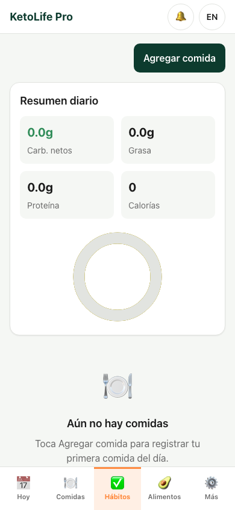
04-panel-habits{kind=link}
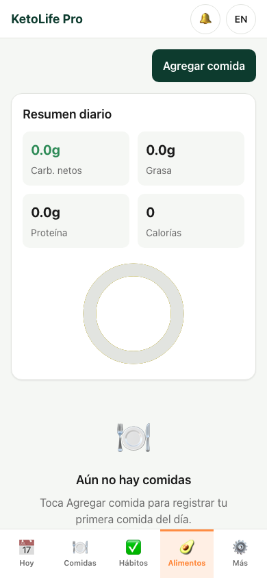
06-panel-foods{kind=link}
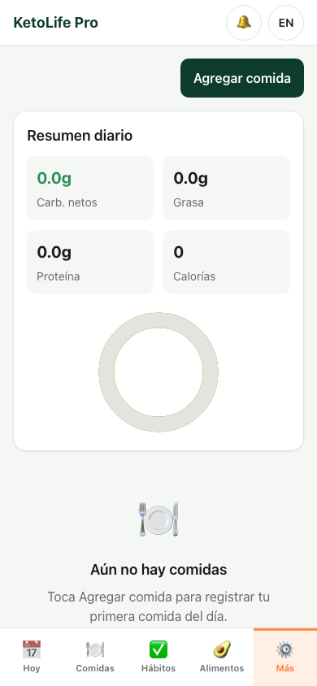
07-panel-more{kind=link}
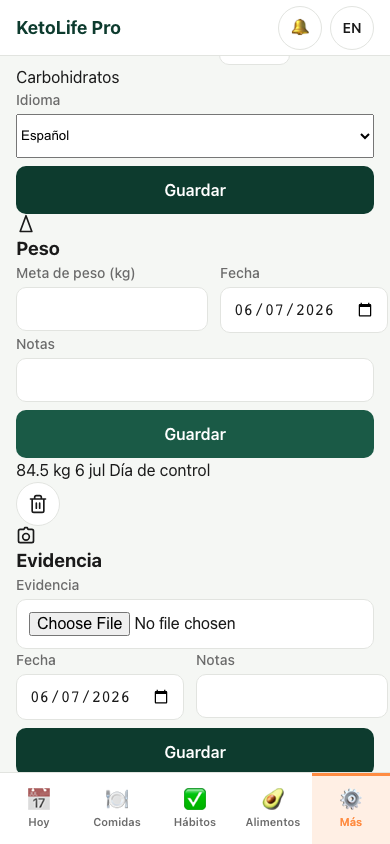
08-weight-saved{kind=link}
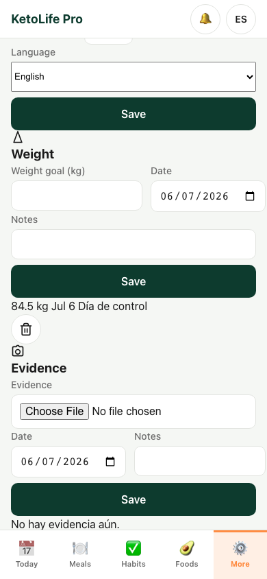
10-english{kind=link}
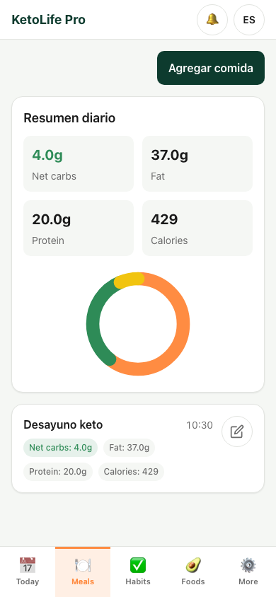
11-persistence-meals{kind=link}
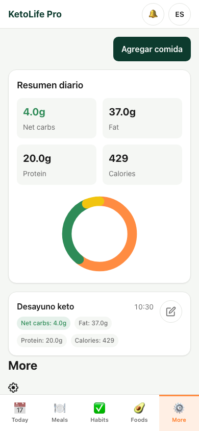
12-persistence-more{kind=link}
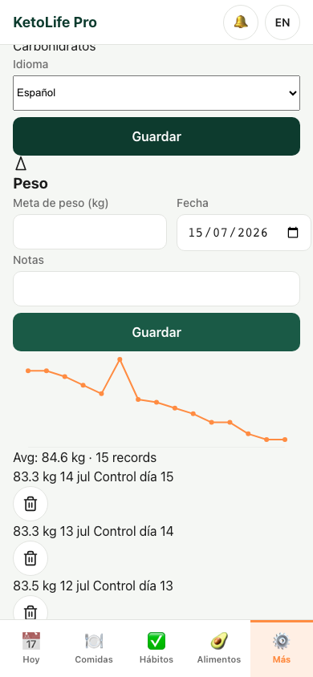
13-15days-meals{kind=link}
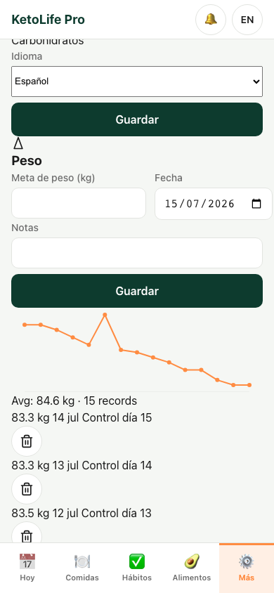
14-15days-weight